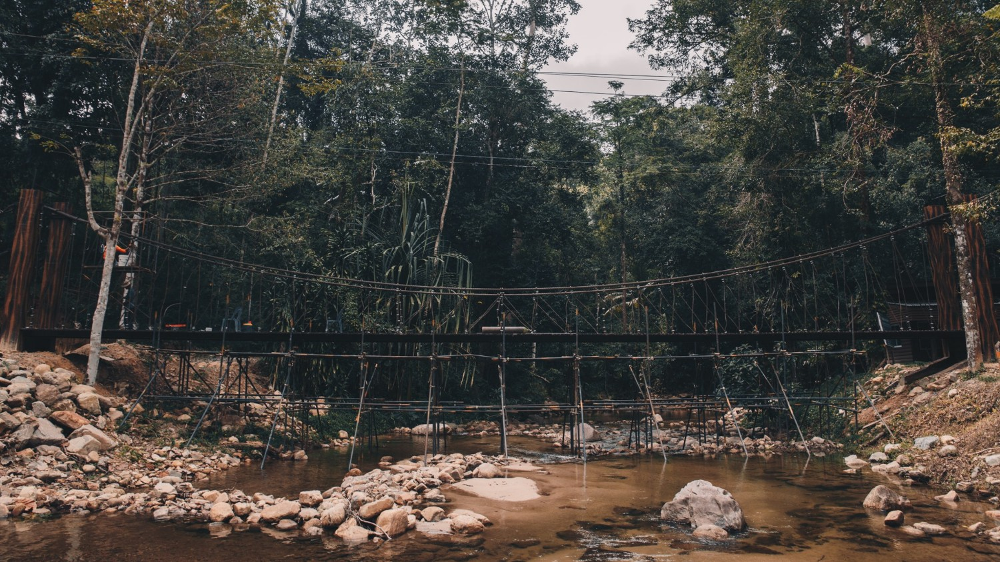

น้ำตกโยง ที่เที่ยวนครศรีธรรมราช ชมธรรมชาติ สูดกลิ่นอายของป่าเขา ให้ใจมันฟิน

น้ำตกนี้จะมีชั้นหน้าผาสูงชัน มีน้ำไหลลงมาเหมือนเกลียวเชือก เลยทำให้เกิดเป็นแอ่งน้ำขนาดใหญ่ด้านล่าง รวมถึงยังมีปลาอาศัยอยู่มากมายหลายชนิดด้วยกันค่ะ ไม่ว่าจะเป็น ปลาแงะ ปลากระสูบขีด เป็นต้น แต่ที่เห็นได้แบบเยอะและชัดเจนที่สุด ก็คือ ปลาพลวง นี่แหละค่ะ

ถือว่าเป็นอีก น้ำตก ที่เที่ยวธรรมชาติ ที่สวยงามมากๆ และยังมีน้ำไหลตลอด เที่ยวกันได้ทั้งปีด้วย แต่อย่าลืมเช็คช่วงปิดทำการของอุทยานฯ กันให้ดีๆ นะคะ เพราะที่นี่เขาจะมีช่วงปิดทำการปีละครั้ง ถ้าใครอยากจะไปเที่ยวก็ต้องแพลนล่วงหน้ากันดีๆ เลยค่ะ ถึงจะได้มาชมความสวยงามใกล้ชิดธรรมชาติแบบนี้